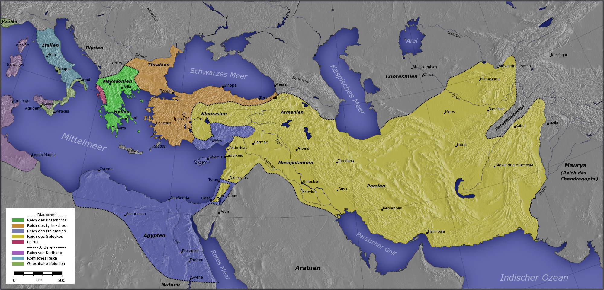
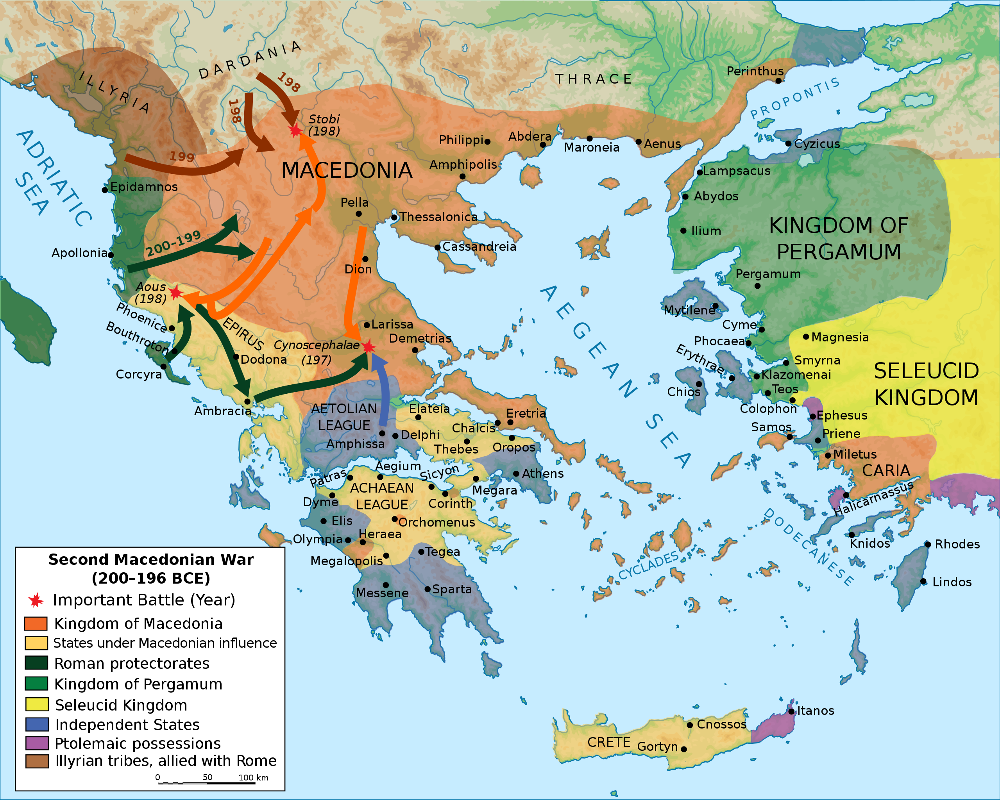

Ancient Greece
Major Periods And Wars of An Ancient Civilization

Ruins of The Parthenon
Ruins of The Parthenon
In the 8th century BC, Greece began to emerge from the Dark Ages, which followed the collapse of the Mycenaean civilization. Literacy had been lost and the Mycenaean script forgotten, but the Greeks adopted the Phoenician alphabet, modifying it to create the Greek alphabet. A mercantile class arose in the first half of the 7th century BC, shown by the introduction of coinage in about 680 BC.[17] This seems to have introduced tension to many city-states, as their aristocratic regimes were threatened by the new wealth of merchants ambitious for political power. By the 6th century BC, several cities had emerged as dominant in Greek affairs: Athens, Sparta, Corinth, and Thebes. Each of them had brought the surrounding rural areas and smaller towns under their control, and Athens and Corinth had become major maritime and mercantile powers as well.
| Name | Founding | Notable Information |
|---|---|---|
| Corinth | 900 BC | Allied with Sparta within the Peloponnesian League, and Corinth participated in the Persian Wars and Peloponnesian War as an ally of Sparta. |
| Thebes | Mycenaean Period | Sided with Persia during the persian invasion of Greece. Sided with Sparta against Athens during the Peloponnesian War. |
| Sparta | 1000 BC | Between the 8th and 7th centuries BC the Spartans experienced a period of lawlessness and civil strife. |
| Athens | 3000 BC | Widespread social unrest led to the reforms of Solon. These would pave the way for the eventual introduction of democracy by Cleisthenes in 508 BC. |

Political geography of ancient Greece in the Archaic period
Click Image To See The
Original
In 499 BC, the Ionian city states under Persian rule rebelled against their Persian-supported tyrant rulers. Supported by troops sent from Athens and Eretria, they advanced as far as Sardis and burnt the city before being driven back by a Persian counterattack. Ten years later, a second invasion was launched by Darius' son Xerxes. The city-states of northern and central Greece submitted to the Persian forces without resistance, but a coalition of 31 Greek city states, including Athens and Sparta, determined to resist the Persian invaders. The Persians were decisively defeated at sea by a primarily Athenian naval force at the Battle of Salamis, and on land in 479 BC at the Battle of Plataea. As the Athenian fight against the Persian empire waned, conflict grew between Athens and Sparta. These tensions were exacerbated in 462 BC when Athens sent a force to aid Sparta in overcoming a helot revolt, but this aid was rejected by the Spartans. The exhaustion of the Greek heartland coincided with the rise of Macedon, led by Philip II. In twenty years, Philip had unified his kingdom, expanded it north and west at the expense of Illyrian tribes.
Major Wars
Events of the first phases of the Greco-Persian Wars.
Click
Image To See The
Original
The Hellenistic period lasted from 323 BC, the end of the wars of Alexander the Great, to the annexation of Greece by the Roman Republic in 146 BC. After the death of Alexander, his empire was, after quite some conflict, divided among his generals, resulting in the Ptolemaic Kingdom (Egypt and adjoining North Africa), the Seleucid Empire (the Levant, Mesopotamia and Persia) and the Antigonid dynasty (Macedonia). The conquests of Alexander had numerous consequences for the Greek city-states. It greatly widened the horizons of the Greeks and led to a steady emigration of the young and ambitious to the new Greek empires in the east. The Antigonid Kingdom became involved in a war with the Roman Republic in the late 3rd century. Although the First Macedonian War was inconclusive, the Romans, in typical fashion, continued to fight Macedon until it was completely absorbed into the Roman Republic (by 149 BC).
The major Hellenistic realms.
Click Image To See The Original
The Greek peninsula came under Roman rule during the 146 BC conquest of Greece after the Battle of Corinth. Macedonia became a Roman province while southern Greece came under the surveillance of Macedonia's prefect; however, some Greek poleis managed to maintain a partial independence and avoid taxation. Athens and other Greek cities revolted in 88 BC, and the peninsula was crushed by the Roman general Sulla. The Roman civil wars devastated the land even further, until Augustus organized the peninsula as the province of Achaea in 27 BC. During the 2nd and 3rd centuries, Greece was divided into provinces including Achaea, Macedonia, Epirus and Thrace. Under Constantine (who professed Christianity) Greece was part of the prefectures of Macedonia and Thrace. Greece remained part of and became the center of the remaining relatively cohesive and robust eastern half of the Roman Empire, the Eastern Roman Empire (now historiographically referred to as the Byzantine Empire), for nearly a thousand more years after the Fall of Rome, the city which once conquered it.
The Roman conquest of Ancient Greece in the 2nd century BC
Click Image To See The Original
Subscribe For More "News" About Ancient Greece